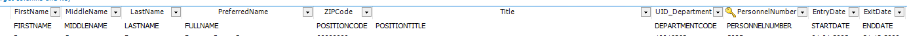
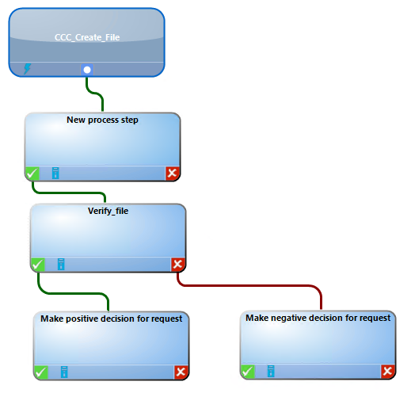
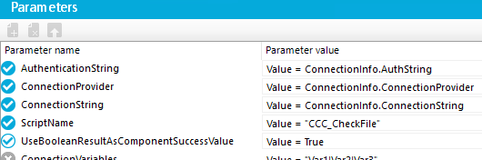
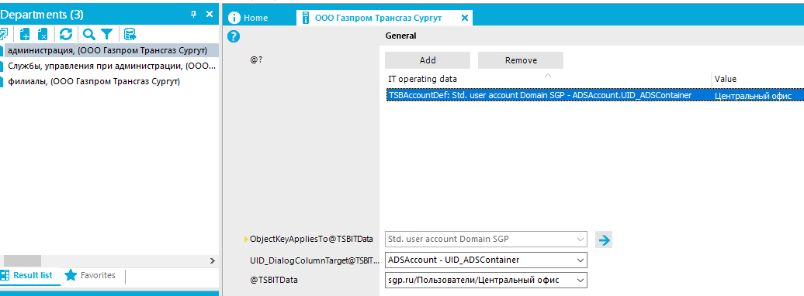
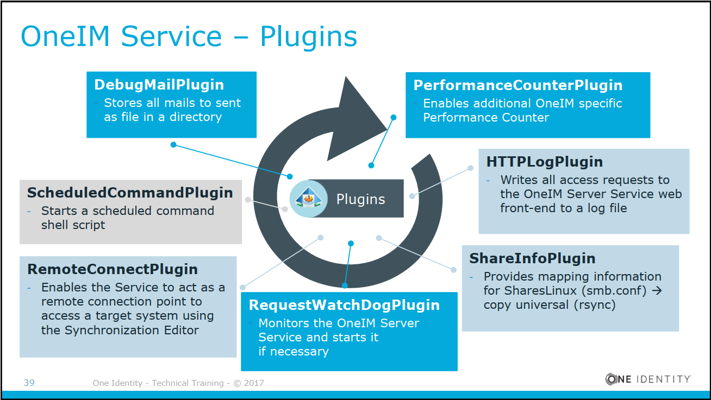

1. Misc
16 августа 2019 г.
18:34
![Skytap Cloud server: IAMSOI 2013 Based Training Environment Login — Information Password Every password 1.4Madmin Connect to Skytap Ensure you use a current browser version of Firefox Google Chrome Intemet Explorer Ensure newest Oracle Java runtime is installed Ensure Firewall is not blocking ports 443, 3389, 80 NAT server: IAMS02 server: IAMS03 IIS, , one1M Home- and dbectory, Server: IAMS04 Sharepoint. IIS server: IAMSIO and . LOA P Workstation: IAMWOI „ 11 Admn TOOK, Visual Studio, Browse. port 80, HTML Client ports > 8000, RDP Active Directory Login (all machines) IAM\administrator Account: Service Accounts - > Database (SQL account) Account: SVC 11M_SQL - > Identity Manager Service IAM\SVC_ Account: MS Active Directory 11M 11M Service AD Connect to and control environment using a HTML5 Browser session Account: - > MS Exchange Account: MS Sharepoint Account: IAM\SVC_ IAM\SVC_ Identity Manager Accounts System user Rolebased User Training alle existing Person.Centralaccount Further Naming Your Computer: Browser or RDP (you get a the Active Directory Domain Domain FQDN Domain DN Identity Manager Database Service name Software path Lab-Folder IAM.corp IAMDB OneIMService : Skytap 32 One Identitv - Technical Trainina -c 2018 Connect to port 80 covered or native RDP Session using dedicated ports ONE IDENTITY](../media/misc/media/image1.png)


Уникальность имени аккаунта

Mapping
![O T_OnelM-41 Manager - (Main Database) Qatabase Object Yiew Help -»Forward • Home Database search Z New R save Navigation Active Directory Info system Hierarchical view Forests Domains Sites Container user accounts Manage levels Linked but not configured No employee assignment "E Disabled user accounts Privileged user accounts Identity Contacts Groups Computers Printer "5 Account policies Active Directory SIDs Tarnet sun-hrnni7Rtlnn Employees Organizations • Business Roles Entitlements IT Shop Attestatio n x Active Directory domains (1) sgp• Remove Active Directory contacts AND „Ga CentralAccount cn Active Directory user accounts AND InternalName DisplayName É}a:-: AND Description < Description @ADSDoman @ADSDoman @ADSDoman Add format • Format preview Active Directory user accounts Description (Description) Description (Description) The quick brown fox jumps over the lazy dog Result list Tasks Tasks Favorites Reload User account Suggested assignments (O) Assigned user accounts (O) Employee No emp loyee assignment (O) Selection Synchronize this object O Domain overview Change master data • Definesearchcriteria for employee assignmett Specitytrust relationships](../media/misc/media/image5.png)
Почитать
https://support.oneidentity.com/technical-documents/identity-manager/8.0/configuration-guide/73
Identity Manager 8.0.1 - Target System Synchronization Reference Guide (oneidentity.com)
OneIdentity/IdentityManager.PoSh-Connector-Generator (github.com)
SQL Server Collation SQL_Latin1_General_CP1_CI_AS
Почта
Postfix на WSL
Порт 2526
Реконсиляция: Процесс приведения в соответствие данных, находящихся в системе IDM, с данными, представленными в целевых системах. В рамках согласования осуществляется корреляция данных, выявление существующих различий, а также инициируется внесение необходимых изменений.
From \<http://co-inform.ru/solutions/identity-and-access-management/glossary.php>
ВАЖНО! При создании скриптов - если будут использоваться доп функции - прописывать импорт модулей в каждом скрипте!
Job Server должен быть SQL Processing Server
Очередь меняем и в дизайнере и в конфиге сервиса на самом Job Server
Чтобы JobServer появился в просмотре очереди - надо его сконфигурировать, через конфигуратор (можно выбрать Template из главного меню)
~~Если БД, с которой работает JobServer находится на другом сервере - надо в настройках JobServer указать Execution Server на сервер с БД~~
3) Для портала пользователя создаем в Manager и указываем System User Password!
4) Чтобы узнать, в какую таблицу загружать данные - в Manager – открыть Employee - View – Show Field Definition
---------------------------------------------------------------
1) Password Policy
Если Initial Password оставить пустым - система булдет генерить произвольный пароль!
Сцепление
Manager – Domain – Define search criteria for employee assignment
PERSONNELNUMBER = EMPLOYEE UID (см скриншот справа)
2) Account Definition нужен для того, чтобы управлять целевой
системой.
Пока он не определен - управление работать не будет.
Можно задать двумя способами
-
На домен
-
На аккаунт
Manager – Employees – Active Directory - Basic Conf Data - Account Definitions
Full Managed means that all predefined attributes are affected and Unmanaged means that only mandatory predefined attributes are affected.
IT Operating Data - указывает связи между департаментом в базе и AD.
Выбрать департамент - Tasks – Edit It operating Data
После создания пользователя в БД, чтобы он создался в AD надо правой кнопкой по нему - Tasks – Assign Account Definitions
Связь департаментов в базе и OU в AD
Делаем выгрузку в csv на основании запроса.
Затем делает Data Import этой csv в БД, чтобы корректно заполнить таблицу TSBITData.
```
select newid() as uid_TSBITData, Department.UID_Department as UID_ORG,'\<Key>\<T>TSBAccountDef\</T>\<P>8b826aeb-9a5f-4c84-a528-6af40976b6f7\</P>\</Key>' as ObjectKeyAppliesTo, 'ADS-D7251336DB99478B8616695F0DF66584' as UID_DialogColumnTarget, ADSContainer.UID_ADSContainer, 'TSBAccountDef: Std. user account Domain SGP - ADSAccount.UID_ADSContainer' as DisplayValue from Department INNER JOIN ADSContainer ON Department.Commentary=ADSContainer.DistinguishedName ```
После импорта csv надо проверить, что в базе Department и TSBITDATA одинаковое кол-во департаментов и связей! Иначе, надо вручную добавлять связи!
3) Создание Person в БД (Designer - Table – Person - CentralAccount)
``` '$CustomProperty01$
If CStr($ImportSource$) \<> "ADS" And CStr($Lastname$) \<> "" And CStr($Firstname$) \<> "" And CStr($Middlename$) \<> "" And _
(Not CBool(Connection.Variables.Get("FULLSYNC")) Or CStr($ImportSource$).StartsWith("EBS") Or CStr($ImportSource$).StartsWith("SAP") ) Then
If CStr(Connection.GetConfigParm("QER\Person\CentralAccountGlobalUnique"))="1" Then
Value = CCC_AE_BuildCentralAccountGlobalUnique( GetValue("UID_Person").String, $Lastname$, $Firstname$, $Middlename$)
Else
Value = CCC_AE_BuildCentralAccount( GetValue("UID_Person").String, $Lastname$, $Firstname$, $Middlename$)
End If
End If ```
Чтобы при создании пользователя в AD корректно прописывался cn, Full name …
Надо для cn прописать ```
If $Givenname$ \<> $Givenname[o]$ Or $Surname$ \<> $Surname[o]$ Or $FK(UID_Person).Middlename$ \<> $FK(UID_Person).Middlename[o]$ Then
If $Givenname$\<>"" AndAlso $Surname$\<>"" AndAlso $FK(UID_Person).Middlename$\<>"" Then
CN = $Surname$ & " " & $Givenname$ & " " & $FK(UID_Person).Middlename$ ```
4) Роли классов
Можно создавать много деревьев ролей.
Каждому дереву ролей нужен корневой элемент, который называется ролью класса (role class).
Эта роль класса используется для определения назначаемых ресурсов и наследование ресурсов в этом дереве.
Если испортить наследование - это будет невозможно изменить. Чтобы пофиксить, надо удалить роль класса и пересоздать ее. Надо быть внимательным при создании роли класса.
В порядке назначения объектов ролевой структуре, нужно настроить эту функцию для каждого класса объекта для управления.
Роли позволяют создать связь Account Definitions и условие отбора пользователя в целевой системе.
Например, мы можем применять политику по созданию учетной записи только для пользователей в определенном подразделении (через назначение Dynamic role).
Создаем Account definition для AD, например -> Класс роль -> Бизнесс роль -> Назначаем роли Dynamic role (если находится в определенном подразделении - создавать аккаунт в AD, например).
На пользователя можно назначить Бизнесс роль вручную.
| Show Entitlement origin - позволяет показать, что привязано к сотруднику. |
|---|
У роли можно отключить наследование - это важно делать, чтобы не было оч много задач!
5) Compliance rule
Для того, чтобы предотвратить нахождение одного пользователя в двух ролях.
Preventative Compliance check
Identity Audit - > Rules.
Чтобы отредактировать правило - надо редактировать его рабочую копию.
Также недостаточно нажать [Сохранить], чтобы активировать изменения. После
сохраняя, нажмите Включить рабочую копию в списке задач, чтобы активировать ее.
Preventative Compliance checks лучше, так как не позволяют саму возможность добавления пользователей в группы одновременно. Работают как часть approval policy. Без нее - не будет работать!
------
6) По Account Definitions для HP Service Desk
Пользователь прилетает из CSV
На основании подразделения он помещается в нужную Бизнес роль автоматически (dynamic role).
На эту бизнес роль назначен Account Definition из AD и из HP Service desk, который создает пользователя в AD и в HP и добавляет пользователя в нужные группы AD и роли Service desk.
Acc Def HP Employee Account Def требует Std User Account Domain SGP (отключил, чтобы можно было оставить при временном отключении пользователя)
HP Account Def требует Acc Def HP Employee Account Def
7) System Debugger
Создаем скрипт в Designer, и открываем его в Visual Studio и правим.
Надо открывать проект "C:\Program Files\One Identity\One Identity Manager\SystemLibrary\SystemLibrary.sln" через Visual Studio
Потом запускаем его и открывается System Debugger!
19) Риск
Если пользователь имеет несколько аккаунтов в разных системах - у него будет выше риск
20) Job Server - это ОС с Job Service
In Win is One Identity Manager Job Service (short name: OneIMService)
8) Временное отключение пользователя
Срабатывает расписание (Designer - Base Data – Schedules)
"Lock accounts of employees that have left the company"
Для разблокировки расписание
"Enable temporarily disabled accounts"
Для внешних систем надо обрабатывать события Enabled и Disabled, как отдельные процессы с отдельными скриптами.
9) External Employee
Можно создать для них ITSHOP с условием - External и накинуть политику - утверждения / аттестации для них.
Или сделать Бизнес роль с динамическим включением в нее и накинуть политику аттестации!!!
Роль External user approvers – в нее нужно добавить пользователя для аттестации External users
QER\WebPortal\PasswordResetURL - прописать адрес портала для сброса пароля.
10) Отслеживание изменений в целевой системе
Отчет System entitlement drifts in all target systems
Через Insert в таблицу сделать процесс свой
Можно, через параметры передавать информацию прямо в скрипты
Value = $FK(UID_ADSAccount).UserPrincipalName$
Можно сделать процесс по отправке email
Message:
Value = "User " + $FK(UID_ADSAccount).UserPrincipalName$ + " add in group " + $FK(UID_ADSGroup).cn$ + " in " + Now().ToString()
Subject
Value = "Changes in group " + $FK(UID_ADSGroup).cn$
https://support.oneidentity.com/technical-documents/identity-manager/8.0/configuration-guide/73
Решение вопроса с отменой изменений членства групп в AD:
1) Делаем процесс на событие INSERT в таблицу ADSAccountInADSGroup
2) Первый шаг - отправка email
3) Скрипт, который будет удалять запись о членстве из таблицы ADSAccountInADSGroup (см справа)
Этот скрипт будет работать для записей с пометкой Synchronization, для других - не удаляет
11) System roles
Предназначены для того, чтобы можно было навесить множество ролей на них.
12) Risk Index
Нужен для того, чтобы для добавления в определенную целевую систему потребовалась дополнительная аттестация, например.
To enable the schedule for calculating risk indexes

![Parameter name Address Authenticationstring SenderAddress Message SmtpPort SmtpServer Subject Parameter value Value = •[redacted-email]• Value = Connectionlnfo.AuthString Value = •[redacted-email]• Value = •user * * • add in group Value = Connection. Value = Connection. GetCo in * NowO.ToStringO 'Chan ±sin rou SFKiU10](../media/misc/media/image7.png)
-
Open the Designer.
-
Select Base Data | General | Schedules.
-
Select the schedule "Calculate risk indexes" in the List Editor.
-
Check the box in the Enabled column.
-
Save the changes.
13) Time Trace
Отображение изменений с учетной записью
Надо в дизайнере - Config Parameters – Common – ProcessState – PropertyLog (x) – AllDefaultPropertiesForModel (x)
Затем, в менеджере - View – Time Trace (и в окне TimeTrace нажать на часы)
За исторические данные отвечают таблицы DialogWatchProperty и DialogWatchOperation
14) API
https://support.oneidentity.com/technical-documents/identity-manager/8.0/rest-api-reference-guide/15
https://t-oneim-4.domain/AppServer/api/entity/Department/30002471
15) Формирование ФИО в Sync Editor в атрибутах
Dim probel as String = " "
Dim fio as String = $LASTNAME$ & probel & $FIRSTNAME$ & probel & $MIDDLENAME$
return fio
16) Active Directory - как можно сцепить учетки и пользователей
По ФИО
При импорте из csv скриптом формируем ФИО в кастомный атрибут
В Менеджере критерий для сцепления учеток пишем - кастомный атрибут - DisplayName (или Name, если лучше соответствует)
17) isGroupAccount
Ставится, чтобы была возможность добавлять пользователя в группы
Например, у пользователя несколько учеток (администратора, обычная).
Когда ему дается доступ к интернету, обе учетки будут добавляться в группу, а админская не должна добавляться в группу
18) Увольнение.
Leaving Date - блокирует учётку и удаляет ее в AD
Last working day - ~~удаляет учетку (чтобы у него был доступ до опреденного времени в компании)~~
~~Не влияет, для информации~~
Учетки переносятся в IDM в InactiveEmployee
https://www.oneidentity.com/community/identity-manager/f/forum/6822/permanently-disabling-users
38) Формат даты в строку
Public Sub CCC_Test3()
Dim date1 = "20/02/1987"
Dim date2 As DateTime = CType(DateTime.ParseExact(date1, "dd/MM/yyyy", System.Globalization.CultureInfo.InvariantCulture), DateTime)
Dim date3 As String = date2.ToString("dd-MM-yyyy")
MsgBox(date3)
End Sub
19) Просмотр доступных событий для таблицы
20) Defaulemailaddress
Изменил дефолтный шаблон
#If EX2K Or NOTES Then
Dim defaultMailAddress As String
If Len($CentralAccount$) > 0 AndAlso Len ($UID_Person$) > 0 Then
defaultMailAddress = VI_AE_CreatedefaultMailAddress($centralaccount$,$uid_person$)
' check if mail address is valid
If VID_IsSMTPAddress(defaultMailAddress) Then
Value = defaultMailAddress
End If
End If
#End If
на
Dim defaultMailAddress As String
Dim maildom As String = String.Empty
maildom = Connection.GetConfigParm("QER\Person\DefaultMailDomain")
If Len($CentralAccount$) > 0 Then
defaultMailAddress = $centralaccount$ + "@" + maildom
Value = defaultMailAddress
End if
The session variable FullSync=FALSE is set if the option Data import is enabled
21) Создание заявки в ServiceDesk (файла)
![Object Browser - Administrator, AD @ dcC1 (Vain Database: Qbied gat ion 50 L X OrgHasCSMGrmp Org OrgHzsESet OrgHasLOAPGroup OrgHuQERRum OrgHasRFSRewt OrgHasSåPGroup orgHBss,LPRde OrgHÆSLA orgHBsspsGroup OrgHasSPSRL_Asgr OrgHasUNSGroup orgHesUNs.Grc.,v8 OrgHasUNXGrcup OrgRoot O TTY* PæOn PersonHasESet PersonHasOERResource R PSRepyt PersonHasTS8LccountDef PersonInBsseTree nDepartæt PersonInITShcoOrg PersonInNCHBsMCcntroI PersonlnOrg ProfitCenterCdIectim requests AD Admin AD econ -Aex&+r.Junec-3.'W2017 AD Admin - T - AD Admin J' 10 . AD Admin SCCOu-t AD - W - 14/2017 DISMISSED ESCALATE GRANTED ORDERGRANTED ORDERREFUSED PREFILLCRCOP PRomJCTEXPlREssoor. REMOvEGRcuPMEM8ERSHlP spsGRoup_goo h AD COjectGyOrdered UIO_Oeoattrnent u10_l t' •JID.Org JC.Org u I O _Chg P P&-ert uvo_ UIO Vila—tog U10_Pmftcerter UlO_PWOSt8e •JID_ Q R Type Uto Sl-op p in g n Level OsplayOro C.lay@gParent I-By P DsoIayPerscn Ir,sstt ed Dsplay F emorGde-ed Céject Gy ent LIS ed Object Oyo Lkedln ai2 CO Re—on 00 State Val CFrom ValdLRil XTO AD AD accord AD Ann Cé3_n Sef a e-ttty LifE•æe C (JUN E ALEXANDER) C (JUNE ALEXANDER) 3/14/2017 AM 371.1,2017 AM 3/102017 AN 10-tity Am Lifeße One C a False 10.0508 Lhs ubscnbed a 23a7cce2f1"45c8ff56cS322S01bEa](../media/misc/media/image8.png)


-
В ITShop создаем продукт и вешаем на него approval policy
-
Создаем процесс CCC_Create_File для таблицы PersonWantsOrg и событие Create_File
-

Для создания файла
#If Not SCRIPTDEBUGGER Then
Imports System.IO
Imports System.Text
#End If
Public Function CCC_CreateFile(ByVal UID_PWO As String) As String
Dim path As String = "c:\temp\MyTest.txt"
' Create or overwrite the file.
Dim fs As IO.FileStream = IO.File.Create(path)
' Add text to the file.
Dim info As Byte() = New UTF8Encoding(True).GetBytes("This is some text in the file.")
fs.Write(info, 0, info.Length)
fs.Close()
Return path
End Function
Для Verify_file

#If Not SCRIPTDEBUGGER Then
Imports System.IO
Imports System.Text
#End If
Public Function CCC_CheckFile() As Boolean
Dim a As String = "123"
Dim path As String = "c:\temp\MyTest.txt"
Dim fs As Boolean = File.Exists(path)
If fs = True Then
CCC_CheckFile = True
Else
CCC_CheckFile = False
End If
End Function

- В workflow approval policy указываем тип EX - Approvals to be made externally и условие - событие Create_File
Шаги Make positive и negative взяты из процесса "VI_ESS_PersonWantsOrg create AD group" таблицы PersonWantsOrg
Убираем положительное решение - оно будет создаваться, через REST API.
Проверка из 1IM
CreateITShopOrder https://support.oneidentity.com/technical-documents/identity-manager/8.0/it-shop-administration-guide/20#TOPIC-861390
Hi Serge,
that's because the methods provided by the customizer are not listed under "Actions".
Go to the "Object" menu, "Properties", "Methods".
The Abort method can only be called internally, so you may need a process to execute the method for you (HandleObjectComponent > CallMethod).
HTH,
Oliver
Вызвать метод можно из процесса
HandleObjectComponent - CallMethod
{
"parameters": [
[ "sa",
True,
"Approved",
Nothing,
"0" ]
]
}
{
"parameters": [
"Parameter value"
],
"base": "\<Key>\<T>Person\</T>\<P>00000000-0000-0000-0000-000000000000\</P>\</Key",
"value": "Sample value"
}
{
"parameters": {
"StringValue": "string",
"IntValue": 0,
"DateValue": "2020-01-20T09:27:22.874Z",
"DoubleValue": 3.14,
"BoolValue": true
}
}
MethodName: Value = "MakeDecision"
ObjectType: Value = "PersonWantsOrg"
Param1: Value = "sa"
Param2: Value = \<approval> ("true" = granted; "false" = denied)
Param3: Value = \<reason for approval decision>
Param4: Value = \<standard reason>
Param5: Value = \<number approval steps> (PWODecisionStep.SubLevelNumber)
WhereClause: Value = "UID_PersonWantsOrg ='"& $UID_PersonWantsOrg$ &"'"
Первый параметр надо указывать UID пользователя, который принимает запрос!!!
По событию!
Сначала, при поступлении события, - проверять, есть ли файл такой - если файла нет - создаем его, если файл есть - делаем approve.
Потом, сервис деск дает команду на генерацию события и процесс запускается снова - так как файл есть - будет approve.
22) FULLSYNC
The session variable FullSync=FALSE is set if the option Data import is enabled. The session variable is set to FullSync=TRUE if the option is disabled. Different processes, scripts and templates are only executed in the One Identity Manager database if FullSync=FALSE. In this context it means they are only synchronized with a secondary system. Synchronizing with a primary system ignores processes, scripts and templates.


- Загрузка Service Items
-
Подготовить источник - удалить переносы строк (Alt + 010)
-
Создать Shopping Center
-
Создать ITShop (ITShopOrg)
-
Загрузить Service Categories
-
Загрузить Service Items (нужно для создания Custom Target Systems Groups)
-
Загрузить Custom Target Systems
-
Загрузить Группы Custom Target System и смапить их с Service Items (AccProduct)
-
Создать Shops и Customer
-
Смапить политику
-
Account Definitions?
- Пересчитывание динамических ролей сразу
QER\Structures\DynamicGroupCheck\CalculateImmediatelyPerson
- Скорость обработки очереди
Process query interval (StartInterval)
This property defines a time interval in which One Identity Manager Service can request new process steps. Click on this icon to discard the change. The default value is 90 seconds. Suggestions for configuring the time interval are calculated from Job server statistical data.
From \<https://support.oneidentity.com/technical-documents/identity-manager/8.0.2/configuration-guide/64>
- Понимание уровней управления (Manage Level)
Unmanaged - из основной учетки поля берутся для создания других учеток, при изменении основной учетки - изменения не переносятся
Full Managed - изменения основной учетки отражаются в учетках Custom Target Systems и др
В шаблонах полей учитываются уровни управления!
Можно создать свой уровень управления и учитывать его в шаблонах вычисления полей
It is possible to specify the manage level for an Account Definition for handling Active Directory user accounts (ADSAccounts). The user account’s manage level determines the scope of the properties that a user account inherits from an Employee. This means that an Employee can have several user accounts in an Active Directory domain, e.g.:
- A Default user account that inherits all properties from the Employee
- An Administrative user account that is associated to an Employee but should not inherit the properties from the Employee.
- A Service account that contains the home directory and the profile directory of the Employee but cannot inherit further properties.
Identity Manager supplies a configuration for manage levels:
• Unmanaged: User accounts with a manage level of “Unmanaged” are associated with an Employee but do not inherit properties further properties. When a new user account is created and assigned to an Employee, the Employee’s properties are initially transferred. If the Employee’s properties are changed at a later date, the changes are not passed on to the user account.
• Full managed: User accounts with a manage level of “Full managed” inherit specific properties from the assigned Employee.
Note: The manage levels, “Unmanaged” and “Full managed”, are taken into account in column templates. Define manage levels depending on the requirements. Then extend templates to include the methods for the additional manage levels.
Fore more information, please refer to the Target System Base Module Administration Guide: Account definitions and manage levels.
From \<https://support.oneidentity.com/identity-manager/kb/148806/understanding-manage-levels>
- Outstanding
Могут быть помечены объекты целевой системы, которые были удалены из этой целевой системы, но остались в 1IM, после синхронизации (потерянные объекты)
The xmarkedfordeletion value bit mask definitions are:
0=Marked for Delete
1=Not found in TargetSystem
2=Contains locked properties
So Value = 2 => Bit 1 set to True => Not found in TargetSystem.
Normal, means no Bit set => Value = 0
And, ootb there are no other processes setting this value.
From \<https://www.oneidentity.com/community/identity-manager/f/forum/29084/xmarkedfordeletion-2>
Identity Manager 8.0.2 - One Identity Manager Connector User Guide
Public Sub CCC_Util_MarkAsOutstanding(XObjectKey As String)
Dim OKey As New DbObjectKey(XObjectKey)
Dim e As IEntity
e = Session.Source.Get(OKey)
e.State = VI.DB.Entities.EntityState.OutStanding
Using uow = Session.StartUnitOfWork()
uow.Put(e)
uow.Commit()
End Using
End Sub
Чтобы управлять объектами Outstanding, надо сначала на Custom Target System Type назначить управляемые таблицы
Зайти в Target System Syncronization и там можно уже удалять объекты
![Manager - (Main Database) Database Object Yiew Help e aack • *Forward • *Database search Z New R Save Home Navigation Custom Target Systems GreenPIum I (GreenPIumI) user accounts Groups Container structure Permissions controls GreenPIum 2 (GreenPIum2) Target system synchronization: G UNSAccount8 UNSAccount81nUNSGroup8 UNSGroup8 UNSGroup81nUNSGroup8 Trouble-shootirrg Synchronization logs &asic configuration data Target system types password policies Target systems Account definitions Employees x Target system types (1) Recently used GreenPIum Remove assign men ts Table UNSAccount8 x Green GreenPIum Result list Tasks Tasks Favorites O Target system type overview Change master data AssiQn svnchronizationtables Configure tables for publishitv UNSAccount81nUNSGroupa UNSGroupa UNSGroup81nUNSGroupa Add assignments Table UNSAccount8 UNSAccount81nUNSGroupa UNSGroupa UNSGroup81nUNSGroupa AccountNames AccProduct](../media/misc/media/image18.png)

Чтобы иметь возможность вновь создавать удаленные объекты в целевой системе, можно установить флаг Can be published - это даст возможность обрабатывать событие HandleOutstanding и инзертить в целевую систему объект снова
To publish outstanding objects
![Manager - (Main Database) Database Home Object Yiew Help e aack • Forward • Navigation Custom Target Systems Synchronization logs &asic configuration data Target system types password policies Target systems Account definitions Target system managers Custom target systems Employees [a Organizations Database search Z New R Save x Target system types (1) Recently used UNSGroupa Target systemtvpes: assignedtables LINSAccountE UNSAccountE1nUNSGroupE UNSGroupE UNSGroupE1nUNSGroupB Green Plum X Can be published Merge mode Condition Green GreenPIum Result list Tasks Tasks Favorites O Target system type overview Change master data • Assignsyrffronizationtables Configure tables for publishirv](../media/misc/media/image20.png)
- Create a process for each table with outstanding objects you want to publish. The process is triggered by the event "HandleOutstanding" and provisions the objects. Use the process function "AdHocProjection" of the process component "ProjectorComponent". For more detailed information about defining processes, see One Identity Manager Configuration Guide.
| Meta value | Meaning |
|---|---|
| IsLoaded | This value specifies whether the object is loaded from the database. |
| IsChanged | This value specifies whether the object is altered when it is loaded from the database. |
| IsDifferent | This value specifies whether the new value is different from the old value. You can access to the column through: Columnname[C]. |
| IsDeleted | This value specifies whether the object is marked for deletion. |
Table 267: Meta Values and their Meaning
From \<https://support.oneidentity.com/technical-documents/identity-manager/8.0/configuration-guide/84>
- Расширение схемы хранимыми процедурами
You cannot create custom functions, triggers or database procedures with the program Schema Extension. If you require custom functions, triggers or database procedures, add them with a suitable query tool into the database. Keep to the following conventions for name database components.
-
Name begin with the string CCC_.
-
All names are a maximum of 30 characters long.
-
It is recommended to use UpperCamelCase for as notation for the names.
- Multi-request resources
Identity Manager 8.0 - IT Shop Administration Guide (oneidentity.com)
![Type Resources Multi-request resources Multi- requestable/unsubscribable resources Description Resources that an employee (workstation, device) may own just once. The resources can be requested in the IT Shop just once. The resources are assigned to the employees after approval has been granted. They remain assigned until the request is canceled. You can request them again a later point. Examples: phones, company cars Resources that can be requested more than once in the IT Shop. Requests are automatically canceled once approved. The resources are not explicitly assigned to employees. Example: consumables, like pens, printer paper Resources which an employee can request more than once in the IT Shop but must return them explicitly once they are no longer needed. The resources are assigned to the employees after approval has been granted. They remain assigned until the request is canceled. Example: printer, monitor Table QERResource QERReuse QERReuseUS](../media/misc/media/image21.png)

IT SHOP: Approval policy
![Navigation [T Shop Info system ITShop Identity & Access Lifecycle Shop Customers (dynamic): SGP Employee Shelf SGP Line Manager Shelf SGP Line Manager / Department Manager SGP Project Controller Trainee Shelf SGP Line Manager with preventive compliarrce Request templates ] uests Service catalog &asic configuration data Processirrg status Stardard reasons Approval procedures Approval policies Predefined "E Custom defined Approval workflows Employees Organizations • Business Roles Entitlements IT Shop Attestation x Approval policies (14) Recently used SGP Line Manager Department Manager Approval SGP Line Manager Approval Approval of Active Directory group change requests Approval of Active Directory group create requests Approval of Active Directory group membership requests Approval of Active Directory group membership requests Il Approval of Active Directory group remove requests Approval of system entitlement removal requests Challenge loss of role membership Compliance checking simplified New manager assignment Recipient's manager Self service Result list Favorites Tasks Tasks Validitycheck O Approval policyoverview Change master data Add to IT Shop Approval poloj Role type Prioritj Approval wo Rene-wa wo Carellation Mail template Mail template Mail template Mail template Mail template Mail template Description Error log SGP Line Manager with preventive... • General Manager with preventive compliance Approval New workflow New workflow AlignIayoLt Approval levels Add Delete Approval steps Delete Assignm ene Remove posibve Remove negative Remove reroute Remove escalaton](../media/misc/media/image23.png)
Оригинал скрипта по созданию CN у пользователя в AD
If Not CBool(Variables("FULLSYNC")) Then
Dim CN, CNfix, DNold, DNnew,Domain, wherePart As String
Dim i As Integer
Dim f As ISqlFormatter = Connection.SqlFormatter
If $Givenname$ \<> $Givenname[o]$ Or $Surname$ \<> $Surname[o]$ Then
If $Givenname$\<>"" AndAlso $Surname$\<>"" Then
CN = $Surname$ & " " & $Givenname$
ElseIf $Givenname$\<>"" Then
CN = $Givenname$
ElseIf $Surname$\<>"" Then
CN = $Surname$
Else
CN = $cn$
End If
Else
CN = $cn$
End If
Dim cnLen as Integer = Base.TableDef.Columns("CN").MaxLen
CN = VID_Left(CN, cnLen)
If $cn[o]$\<>CN Or $UID_ADSContainer[o]$\<>$UID_ADSContainer$ Then
i=1
CNFix = CN
If $UID_ADSContainer[o]$ \<> "" Then
DNold = $FK(UID_ADSContainer[o]).DistinguishedName$
Else
DNold = $FK(UID_ADSDomain[o]).DistinguishedName$
End If
If $UID_ADSContainer$ \<> "" Then
DNnew = $FK(UID_ADSContainer).DistinguishedName$
Else
DNnew = $FK(UID_ADSDomain).DistinguishedName$
End If
Domain = $UID_ADSDomain$
If DNold \<> "" And DNold \<> DNnew Then
wherePart = f.OrRelation( _
f.Comparison("DistinguishedName", ADS_CreateDN("cn", CN, DNnew), ValType.String), _
f.Comparison("DistinguishedName", ADS_CreateDN("cn", CN, DNold), ValType.String) _
)
Else
wherePart = f.Comparison("DistinguishedName", ADS_CreateDN("cn", CN, DNnew), ValType.String)
End If
Do While Connection.Exists( "ADSAccount", _
f.AndRelation( _
f.UidComparison("UID_ADSAccount", $UID_ADSAccount$, CompareOperator.NotEqual), _
f.UidComparison("UID_ADSDomain", Domain), _
wherePart _
))
CN = VID_Left(CNfix, cnLen - (1 + CStr(i).Length)) & "_" & i
If DNold \<> "" And DNold \<> DNnew Then
wherePart = f.OrRelation( _
f.Comparison("DistinguishedName", ADS_CreateDN("cn", CN, DNnew), ValType.String), _
f.Comparison("DistinguishedName", ADS_CreateDN("cn", CN, DNold), ValType.String) _
)
Else
wherePart = f.Comparison("DistinguishedName", ADS_CreateDN("cn", CN, DNnew), ValType.String)
End If
i=i+1
Loop
End If
Value = CN
End If



Oracle DB
' VI-KEY(\<Key>\<T>DialogScript\</T>\<P>CCC-FD31AB9E86D47A4EABE18EFBF3F642A9\</P>\</Key>, CCC_Test2)
#If Not SCRIPTDEBUGGER Then
References Devart.Data.Oracle.dll
Imports Devart.Data.Oracle
#End If
Public Function GetOracleConnectionString() As String
Dim cs As New Devart.Data.Oracle.OracleConnectionStringBuilder()
cs.ConnectMode = Devart.Data.Oracle.OracleConnectMode.Default
cs.Sid = ""
cs.ServiceName = "OIM_SD"
cs.UserId = "OIM_SD"
cs.Password = "Password123"
cs.Server = "[REDACTED_IP]"
cs.Direct = True
Return cs.ConnectionString
End Function
Public Sub OracleExecute()
Dim dbFac As IDbFactory = DbApp.GetFactoryByName("VI.DB.Oracle.ViOracleFactory,VI.DB.Oracle")
Dim strSQL As String
Dim tabnum As String
Dim myP1 As New Devart.Data.Oracle.OracleParameter
myP1.ParameterName = "tabno"
myP1.Value = 873
strSQL = "ussc_enable_employee"
'strSQL = "UPDATE ADMIN.ITSM_PERSONS SET PER_JOBTitle = 'Старший инспектор канцелярии' WHERE PER_OID = 281478295650441"
Using sf = DbApp.ConnectTo(GetOracleConnectionString()).Using(dbFac).BuildSessionFactory()
Using dbSession = sf.OpenDbSession()
Try
dbSession.SqlExecuteStoredProcedure(strSQL)
'dbSession.SqlExecuteNonQuery(strSQL)
Catch ex As Exception
'MsgBox(ex)
Throw New Exception("Error", ex)
End Try
End Using
End Using
End Sub
Выполнить select
' VI-KEY(\<Key>\<T>DialogScript\</T>\<P>CCC-CB992DB7D1CA2E49A313987CCF7AAA82\</P>\</Key>, CCC_Test3)
Public Sub CCC_Test3()
Dim oradb As String = "Data Source=[REDACTED_IP];User Id=[REDACTED_USER];Password=[REDACTED];Service name=OIM_SD;Direct=True"
Using OracleConnection = New OracleConnection(oradb)
OracleConnection.Open()
Dim cmd As New OracleCommand With {
.Connection = OracleConnection,
.CommandText = "select * from employee where tab_num LIKE '873'",
.CommandType = CommandType.Text
}
Dim dr As OracleDataReader = cmd.ExecuteReader()
dr.Read()
MsgBox(dr.Item("ENABLED"))
OracleConnection.Dispose()
End Using
End Sub
--------------------
Выполнит процедуру
' VI-KEY(\<Key>\<T>DialogScript\</T>\<P>CCC-CB992DB7D1CA2E49A313987CCF7AAA82\</P>\</Key>, CCC_Test3)
Public Sub CCC_Test3()
Dim oradb As String = "Data Source=[REDACTED_IP];User Id=[REDACTED_USER];Password=[REDACTED];Service name=OIM_SD;Direct=True"
Using OracleConnection = New OracleConnection(oradb)
OracleConnection.Open()
Dim cmd As New OracleCommand With {
.Connection = OracleConnection,
.CommandText = "ussc_disable_employee",
.CommandType = CommandType.StoredProcedure
}
cmd.Parameters.Add(New OracleParameter("v_login", OracleDbType.VarChar, ParameterDirection.Input)).Value = "873"
cmd.ExecuteNonQuery()
OracleConnection.Dispose()
End Using
End Sub
Создание пользователя HP, через процедуру
' VI-KEY(\<Key>\<T>DialogScript\</T>\<P>CCC-CB992DB7D1CA2E49A313987CCF7AAA82\</P>\</Key>, CCC_Test3)
Public Sub CCC_Test3()
Dim oradb As String = "Data Source=[REDACTED_IP];User Id=[REDACTED_USER];Password=[REDACTED];Service name=OIM_SD;Direct=True"
Using OracleConnection = New OracleConnection(oradb)
OracleConnection.Open()
Dim cmd As New OracleCommand With {
.Connection = OracleConnection,
.CommandText = "ussc_create_user",
.CommandType = CommandType.StoredProcedure
}
cmd.Parameters.Add(New OracleParameter("v_login", OracleDbType.VarChar, ParameterDirection.Input)).Value = "ivanovsa"
cmd.Parameters.Add(New OracleParameter("v_password", OracleDbType.VarChar, ParameterDirection.Input)).Value = "qwe123"
cmd.Parameters.Add(New OracleParameter("v_firstname", OracleDbType.VarChar, ParameterDirection.Input)).Value = "Semen"
cmd.Parameters.Add(New OracleParameter("v_middlename", OracleDbType.VarChar, ParameterDirection.Input)).Value = "Andreevich"
cmd.Parameters.Add(New OracleParameter("v_lastname", OracleDbType.VarChar, ParameterDirection.Input)).Value = "Ivanov"
cmd.Parameters.Add(New OracleParameter("v_email", OracleDbType.VarChar, ParameterDirection.Input)).Value = "<[redacted-email]>"
cmd.Parameters.Add(New OracleParameter("v_tabnum", OracleDbType.VarChar, ParameterDirection.Input)).Value = "111234"
cmd.ExecuteNonQuery()
OracleConnection.Dispose()
End Using
End Sub
Создание пользователя с переданными параметрами HP
Public Function CCC_UNSAccountB_HP_Insert(ByVal dbsUnsAccount As SingleDbObjectSnapshot) As String
'return value should be the UNSAccountB.ObjectGUID
'ussc_create_user - Create user account in HP Service desk
Dim oradb As String = "Data Source=[REDACTED_IP];User Id=[REDACTED_USER];Password=[REDACTED];Service name=OIM_SD;Direct=True"
Dim strLOGFileName = "c:\data\HP\hp.log"
Dim login As String = dbsUnsAccount.GetValue("Accountname").String
Dim email As String = login + "<@surgut.[redacted-domain]>"
Using OracleConnection = New OracleConnection(oradb)
OracleConnection.Open()
Dim cmd As New OracleCommand With {
.Connection = OracleConnection,
.CommandText = "ussc_create_user",
.CommandType = CommandType.StoredProcedure
}
cmd.Parameters.Add(New OracleParameter("v_login", OracleDbType.VarChar, ParameterDirection.Input)).Value = login
cmd.Parameters.Add(New OracleParameter("v_password", OracleDbType.VarChar, ParameterDirection.Input)).Value = "qwe123"
cmd.Parameters.Add(New OracleParameter("v_firstname", OracleDbType.VarChar, ParameterDirection.Input)).Value = dbsUnsAccount.GetValue("FirstName").String
cmd.Parameters.Add(New OracleParameter("v_middlename", OracleDbType.VarChar, ParameterDirection.Input)).Value = dbsUnsAccount.GetValue("CCC_MiddleName").String
cmd.Parameters.Add(New OracleParameter("v_lastname", OracleDbType.VarChar, ParameterDirection.Input)).Value = dbsUnsAccount.GetValue("LastName").String
cmd.Parameters.Add(New OracleParameter("v_email", OracleDbType.VarChar, ParameterDirection.Input)).Value = email
cmd.Parameters.Add(New OracleParameter("v_tabnum", OracleDbType.VarChar, ParameterDirection.Input)).Value = dbsUnsAccount.GetValue("Description").String
Try
cmd.ExecuteNonQuery()
Catch ex As Exception
VID_Write2Log(strLOGFileName, String.Format("{0}, ==> ERROR: {1}", Now.ToString(), ViException.ErrorString(ex)))
End Try
OracleConnection.Dispose()
End Using
Return dbsUnsAccount.GetValue("Description").String
End Function
Скрипт создания Employee HP
Public Function CCC_UNSAccountB_HPusers_Insert(ByVal dbsUnsAccount As SingleDbObjectSnapshot) As String
'return value should be the UNSAccountB.ObjectGUID
'ussc_create_employee - Create employee in HP Service desk
Dim oradb As String = "Data Source=[REDACTED_IP];User Id=[REDACTED_USER];Password=[REDACTED];Service name=OIM_SD;Direct=True"
Dim strLOGFileName = "c:\data\HP\hp.log"
Dim login As String = dbsUnsAccount.GetValue("Accountname").String
Dim email As String = login + "<@surgut.[redacted-domain]>"
Dim adlogin As String = login + "<@domain>"
Using OracleConnection = New OracleConnection(oradb)
OracleConnection.Open()
Dim cmd As New OracleCommand With {
.Connection = OracleConnection,
.CommandText = "ussc_create_employee",
.CommandType = CommandType.StoredProcedure
}
cmd.Parameters.Add(New OracleParameter("v_tabnum", OracleDbType.VarChar, ParameterDirection.Input)).Value = dbsUnsAccount.GetValue("Description").String
cmd.Parameters.Add(New OracleParameter("v_firstname", OracleDbType.VarChar, ParameterDirection.Input)).Value = dbsUnsAccount.GetValue("FirstName").String
cmd.Parameters.Add(New OracleParameter("v_middlename", OracleDbType.VarChar, ParameterDirection.Input)).Value = dbsUnsAccount.GetValue("CCC_MiddleName").String
cmd.Parameters.Add(New OracleParameter("v_lastname", OracleDbType.VarChar, ParameterDirection.Input)).Value = dbsUnsAccount.GetValue("LastName").String
cmd.Parameters.Add(New OracleParameter("v_position", OracleDbType.VarChar, ParameterDirection.Input)).Value = dbsUnsAccount.GetValue("CCC_Position").String
cmd.Parameters.Add(New OracleParameter("v_email", OracleDbType.VarChar, ParameterDirection.Input)).Value = email
cmd.Parameters.Add(New OracleParameter("v_organization", OracleDbType.VarChar, ParameterDirection.Input)).Value = ""
cmd.Parameters.Add(New OracleParameter("v_adlogin", OracleDbType.VarChar, ParameterDirection.Input)).Value = adlogin
cmd.Parameters.Add(New OracleParameter("v_location", OracleDbType.VarChar, ParameterDirection.Input)).Value = ""
cmd.Parameters.Add(New OracleParameter("v_host", OracleDbType.VarChar, ParameterDirection.Input)).Value = ""
cmd.Parameters.Add(New OracleParameter("v_socket", OracleDbType.VarChar, ParameterDirection.Input)).Value = ""
cmd.Parameters.Add(New OracleParameter("v_room", OracleDbType.VarChar, ParameterDirection.Input)).Value = ""
cmd.Parameters.Add(New OracleParameter("v_defaulphone", OracleDbType.VarChar, ParameterDirection.Input)).Value = ""
cmd.Parameters.Add(New OracleParameter("v_street", OracleDbType.VarChar, ParameterDirection.Input)).Value = ""
cmd.Parameters.Add(New OracleParameter("v_oid", OracleDbType.VarChar, ParameterDirection.Input)).Value = ""
Try
cmd.ExecuteNonQuery()
Catch ex As Exception
VID_Write2Log(strLOGFileName, String.Format("{0}, ==> ERROR: {1}", Now.ToString(), ViException.ErrorString(ex)))
End Try
OracleConnection.Dispose()
End Using
Return dbsUnsAccount.GetValue("Description").String
End Function
Скрипт добавления пользователя в группу HP
Public Sub CCC_UnsAccountBInUnsGroupB_HP_Add(ByVal dbsUnsAccount As SingleDbObjectSnapshot, ByVal dbsUnsGroup As SingleDbObjectSnapshot)
Dim oradb As String = "Data Source=[REDACTED_IP];User Id=[REDACTED_USER];Password=[REDACTED];Service name=OIM_SD;Direct=True"
Dim strLOGFileName = "c:\data\HP\hp.log"
Using OracleConnection = New OracleConnection(oradb)
OracleConnection.Open()
Dim cmd As New OracleCommand With {
.Connection = OracleConnection,
.CommandText = "add_usr_role",
.CommandType = CommandType.StoredProcedure
}
cmd.Parameters.Add(New OracleParameter("v_login", OracleDbType.VarChar, ParameterDirection.Input)).Value = dbsUnsAccount.GetValue("Accountname").String
cmd.Parameters.Add(New OracleParameter("v_role", OracleDbType.VarChar, ParameterDirection.Input)).Value = dbsUnsGroup.GetValue("UID_UNSGroupB").String
Try
cmd.ExecuteNonQuery()
Catch ex As Exception
VID_Write2Log(strLOGFileName, String.Format("{0}, ==> ERROR: {1}", Now.ToString(), ViException.ErrorString(ex)))
End Try
OracleConnection.Dispose()
End Using
End Sub
-----
Скрипт обновления пользователя HP
Public Sub CCC_UNSAccountB_HPusers_Update(ByVal dbsUnsAccount As SingleDbObjectSnapshot)
Dim oradb As String = "Data Source=[REDACTED_IP];User Id=[REDACTED_USER];Password=[REDACTED];Service name=OIM_SD;Direct=True"
Dim strLOGFileName As String = "c:\data\HP\hp.log"
Dim tabnum As String = dbsUnsAccount.GetValue("Description").String
Dim tabnum_correct As String = tabnum.Substring(3)
Using OracleConnection = New OracleConnection(oradb)
OracleConnection.Open()
If dbsUnsAccount.GetValue("LastName").String \<> "" Then
Dim cmd As New OracleCommand With {
.Connection = OracleConnection,
.CommandText = "USSC_UPDATE_EMP_LASTNAME",
.CommandType = CommandType.StoredProcedure
}
cmd.Parameters.Add(New OracleParameter("v_tabnum", OracleDbType.VarChar, ParameterDirection.Input)).Value = tabnum_correct
cmd.Parameters.Add(New OracleParameter("v_lastname", OracleDbType.VarChar, ParameterDirection.Input)).Value = dbsUnsAccount.GetValue("LastName").String
Try
cmd.ExecuteNonQuery()
Catch ex As Exception
VID_Write2Log(strLOGFileName, String.Format("{0}, ==> ERROR: {1}", Now.ToString(), ViException.ErrorString(ex)))
End Try
End If
If dbsUnsAccount.GetValue("Accountname").String \<> "" Then
Dim login As String = dbsUnsAccount.GetValue("Accountname").String
Dim adlogin As String = login + "<@domain>"
Dim cmd1 As New OracleCommand With {
.Connection = OracleConnection,
.CommandText = "USSC_UPDATE_EMP_ADLOGIN",
.CommandType = CommandType.StoredProcedure
}
cmd1.Parameters.Add(New OracleParameter("v_tabnum", OracleDbType.VarChar, ParameterDirection.Input)).Value = tabnum_correct
cmd1.Parameters.Add(New OracleParameter("v_adlogin", OracleDbType.VarChar, ParameterDirection.Input)).Value = adlogin
Try
'VID_Write2Log(strLOGFileName, String.Format("{0}, ==> TABNUM: {1}, AD_LOGIN: {2}", Now.ToString(), tabnum, adlogin))
cmd1.ExecuteNonQuery()
Catch ex As Exception
VID_Write2Log(strLOGFileName, String.Format("{0}, ==> ERROR: {1}", Now.ToString(), ViException.ErrorString(ex)))
End Try
End If
OracleConnection.Dispose()
End Using
End Sub
Скрипт отключения пользователя HP
Public Function CCC_UNSAccountB_HPusers_Disabled(ByVal tabnum As String) As String
Dim oradb As String = "Data Source=[REDACTED_IP];User Id=[REDACTED_USER];Password=[REDACTED];Service name=OIM_SD;Direct=True"
Dim strLOGFileName As String = "c:\data\HP\hp.log"
'Dim login As String = dbsUnsAccount.GetValue("Accountname").String
Using OracleConnection = New OracleConnection(oradb)
OracleConnection.Open()
Dim cmd As New OracleCommand With {
.Connection = OracleConnection,
.CommandText = "USSC_DISABLE_EMPLOYEE",
.CommandType = CommandType.StoredProcedure
}
cmd.Parameters.Add(New OracleParameter("v_tabnum", OracleDbType.VarChar, ParameterDirection.Input)).Value = tabnum
Try
cmd.ExecuteNonQuery()
Catch ex As Exception
VID_Write2Log(strLOGFileName, String.Format("{0}, ==> ERROR: {1}", Now.ToString(), ViException.ErrorString(ex)))
End Try
OracleConnection.Dispose()
End Using
Return tabnum
End Function
Directum создание пользователя (не робит, так как в процедуре создается учетка в SQL и доступ с Windows аутентификацией)
Public Function CCC_UNSAccountB_Directum_Insert(ByVal dbsUnsAccount As SingleDbObjectSnapshot) As String
Dim connetionString As String = "Data Source=[REDACTED_IP]\MSSQLSERVER; Initial Catalog=DIRECTUM;Integrated Security=false; User ID=[REDACTED_USER];Password=;"
Using conn As New System.Data.SqlClient.SqlConnection(connetionString)
Using cmd As New System.Data.SqlClient.SqlCommand("INSERT INTO Employees (Name, Department, Salary) VALUES (@Name, @Department, @Salary)", conn)
cmd.CommandType = CommandType.Text
cmd.Parameters.AddWithValue("@Name", _name)
cmd.Parameters.AddWithValue("@City", _departmenmt)
cmd.Parameters.AddWithValue("@City", _salary)
conn.Open()
Dim i As Integer = cmd.ExecuteNonQuery()
conn.Close()
Return CType(i, String)
End Using
End Using
End Function
-------------------
Directum обновление пользователя
Public Sub CCC_UNSAccountB_Directum_Update(ByVal dbsUnsAccount As SingleDbObjectSnapshot)
Dim strLOGFileName As String = "c:\data\Directum\Directum.log"
Dim connetionString As String = "Data Source=[REDACTED_IP]; Initial Catalog=DIRECTUM;Integrated Security=false; User ID=[REDACTED_USER];Password=[REDACTED];"
Using conn As New System.Data.SqlClient.SqlConnection(connetionString)
Using cmd As New System.Data.SqlClient.SqlCommand("OIM_UpdateUser", conn)
cmd.CommandType = CommandType.StoredProcedure
cmd.Parameters.AddWithValue("@LoginName", dbsUnsAccount.GetValue("Accountname").String)
cmd.Parameters.AddWithValue("@NewName", dbsUnsAccount.GetValue("DisplayName").String)
'cmd.Parameters.Add(New System.Data.SqlClient.SqlParameter("@LoginName", login))
'cmd.Parameters.Add(New System.Data.SqlClient.SqlParameter("@NewName", newname))
conn.Open()
Try
cmd.ExecuteNonQuery()
Catch ex As Exception
VID_Write2Log(strLOGFileName, String.Format("{0}, ==> ERROR: {1}", Now.ToString(), ViException.ErrorString(ex)))
End Try
conn.Close()
End Using
End Using
End Sub
Directum отключение пользователя
Public Function CCC_UNSAccountB_Directum_Disabled(ByVal login As String) As String
Dim strLOGFileName As String = "c:\data\Directum\Directum.log"
Dim connetionString As String = "Data Source=[REDACTED_IP]; Initial Catalog=DIRECTUM;Integrated Security=false; User ID=[REDACTED_USER];Password=[REDACTED];"
Using conn As New System.Data.SqlClient.SqlConnection(connetionString)
Using cmd As New System.Data.SqlClient.SqlCommand("OIM_DisableUser", conn)
cmd.CommandType = CommandType.StoredProcedure
cmd.Parameters.AddWithValue("@LoginName", login)
conn.Open()
Try
cmd.ExecuteNonQuery()
VID_Write2Log(strLOGFileName, String.Format("{0}, ==> User: {1} is disabled", Now.ToString(), login))
Catch ex As Exception
VID_Write2Log(strLOGFileName, String.Format("{0}, ==> ERROR: {1}", Now.ToString(), ViException.ErrorString(ex)))
End Try
conn.Close()
End Using
End Using
Return login
End Function
Directum включение пользователя
Public Function CCC_UNSAccountB_Directum_Enabled(ByVal login As String) As String
Dim strLOGFileName As String = "c:\data\Directum\Directum.log"
Dim connetionString As String = "Data Source=[REDACTED_IP]; Initial Catalog=DIRECTUM;Integrated Security=false; User ID=[REDACTED_USER];Password=[REDACTED];"
Using conn As New System.Data.SqlClient.SqlConnection(connetionString)
Using cmd As New System.Data.SqlClient.SqlCommand("OIM_EnableUser", conn)
cmd.CommandType = CommandType.StoredProcedure
cmd.Parameters.AddWithValue("@LoginName", login)
conn.Open()
Try
cmd.ExecuteNonQuery()
VID_Write2Log(strLOGFileName, String.Format("{0}, ==> User: {1} is enabled", Now.ToString(), login))
Catch ex As Exception
VID_Write2Log(strLOGFileName, String.Format("{0}, ==> ERROR: {1}", Now.ToString(), ViException.ErrorString(ex)))
End Try
conn.Close()
End Using
End Using
Return login
End Function
Скрипт удаления членства из группы AD
Public Sub ССС_ADSAccountInADSGroup_Del(ByVal UID_ADSGroup As String, ByVal UID_ADSAccount As String)
Dim strLOGFileName = "c:\temp\logs\temp.txt"
Dim ADSAccountInADSGroup_query = Query.From("ADSAccountInADSGroup") _
.Where(Function(t) t.Column("UID_ADSGroup") = UID_ADSGroup And t.Column("UID_ADSAccount") = UID_ADSAccount) _
.SelectAll()
Dim ADSAccountInADSGroups = Session.Source.GetCollection(ADSAccountInADSGroup_query, EntityCollectionLoadType.Bulk)
Using uow = Session.StartUnitOfWork()
' Walk through the list of all persons
For Each ADSAccountInADSGroup As IEntity In ADSAccountInADSGroups
' Mark for deletion
ADSAccountInADSGroup.MarkForDeletion()
' put the object in the unit of work
uow.Put(ADSAccountInADSGroup)
Next
' All person objects will be saved here!
Try
uow.Commit()
Catch ex As Exception
VID_Write2Log(strLOGFileName, String.Format("{0}, ==> ERROR: {1}", Now().ToString(), ViException.ErrorString(ex)))
End Try
End Using
End Sub
---------
Bulk Delete Outstanding Objects
Public Sub CCC_Entity_DeleteOutStandingFromDB(ObjectKeys As IEnumerable(Of String))
Dim f = Connection.SqlFormatter
' Set connection variable to hint about the management of OutStanding objects
Session.Variables.Put("ManageOutstanding", True)
Session.Variables.Put("NoCollisionTest", True)
Session.Variables.Put("ManageOutstandingOperation", "DELETE")
' Group the ObjectKeys by table
Dim keysByTable = ObjectKeys _
.Select(Function(k) New DbObjectKey(k)) _
.GroupBy(Function(k) k.Tablename, StringComparer.OrdinalIgnoreCase)
Try
' Create a unit of work here to optimize execution
Using uow = Session.StartUnitOfWork()
' Iterate through the keys for each table
For Each tableEntry In keysByTable
' Partition the workload into junks defined by the limit of the IN clause.
For Each part In tableEntry.Partition(f.InClauseLimit)
' Define the query for the current partition
Dim q = Query _
.From(tableEntry.Key) _
.Where(Function(t) t.Column("XObjectKey").In(part)) _
.SelectNonLobs()
' Fetch a partition of the data using Bulk collection
Dim entities = Session.Source().GetCollection(q, EntityCollectionLoadType.Bulk)
' For each entity of the collection
For Each e In entities
' Call the customizer method to delete the outstanding object
e.CallMethod("DeleteOutstanding")
' put the entity to save in the unit of work
uow.Put(e)
Next
Next
Next
' Write the changes to the database
uow.Commit()
End Using
Finally
' Remove the connection variable that hints about the management of OutStanding objects
Session.Variables.Remove("ManageOutstanding")
Session.Variables.Remove("NoCollisionTest")
Session.Variables.Remove("ManageOutstandingOperation")
End Try
End Sub
--------------
API
$authdata = @{AuthString = "Module=DialogUser;User=[REDACTED_USER];Password=" }
$authJson = ConvertTo-Json $authdata -Depth 2
# Login (important, pass the NAME for your session variable in -SessionVariable)
Invoke-RestMethod -Uri "https://t-oneim-4.domain/AppServer/auth/apphost" -Body $authJson.ToString() -Method Post -UseDefaultCredentials -Headers @{Accept = "application/json" } -SessionVariable wsession
#"https://t-oneim-4.domain/AppServer/api/entity/Department/30002471"
Invoke-WebRequest -Uri "https://t-oneim-4.domain/AppServer/api/entity/Department/30002471" -WebSession $wsession
-------
API
$authdata = @{AuthString = "Module=DialogUser;User=[REDACTED_USER];Password=[REDACTED]" }
$authJson = ConvertTo-Json $authdata -Depth 2
# Login (important, pass the NAME for your session variable in -SessionVariable)
Invoke-RestMethod -Uri "https://t-oneim-4.domain/AppServer/auth/apphost" -Body $authJson.ToString() -Method Post -UseDefaultCredentials -Headers @{Accept = "application/json" } -SessionVariable wsession
#"https://t-oneim-4.domain/AppServer/api/entity/Department/30002471"
#Get Department
Invoke-WebRequest -Uri "https://t-oneim-4.domain/AppServer/api/entity/Department/30002471" -WebSession $wsession
#Get list users with where
$a = Invoke-WebRequest -Uri "https://localhost/AppServer/api/entities/Person?lastname=Тестовый4&limit=2" -WebSession $wsession
#Create a new object and return URI of new object
$FirstName = "Пользователь"
$LastName = "Тестовый4"
$MiddleName = "Иванович"
$UID_Department = "10013364"
$body = @{values = @{FirstName = $FirstName; LastName = $LastName; MiddleName = $MiddleName; UID_Department = $UID_Department; IsExternal = 0; BirthDate = "1993-05-14"; Gender = 1 } } | ConvertTo-Json
$newURI = (Invoke-RestMethod -Uri "https://t-oneim-4.domain/AppServer/api/entity/Person" -WebSession $wsession -Method Post -Body $body -ContentType "application/json; charset=utf-8").uri
#Change Employee Description
$Description = "Мастер цеха"
$body = @{values = @{Description = $Description } } | ConvertTo-Json
$newURI = (Invoke-RestMethod -Uri "https://t-oneim-4.domain/AppServer/api/entity/Person/8b93c671-fafb-466b-9148-ad0d340c310e" -WebSession $wsession -Method Put -Body $body -ContentType "application/json; charset=utf-8").uri
#Change Employee Department
$Department = "10013365"
$body = @{values = @{UID_Department = $Department } } | ConvertTo-Json
$newURI = (Invoke-RestMethod -Uri "https://t-oneim-4.domain.ru/AppServer/api/entity/Person/8b93c671-fafb-466b-9148-ad0d340c310e" -WebSession $wsession -Method Put -Body $body -ContentType "application/json; charset=utf-8").uri
#Deactivation
$Deactivation_start = [DateTime]::ParseExact('2019.11.24 18:55:00', 'yyyy.MM.dd HH:mm:ss', $null)
$Deactivation_start1 = $Deactivation_start.ToString("yyyy-MM-dd HH:mm:ss.000")
$Deactivation_end = [DateTime]::ParseExact('2019.12.06 18:55:00', 'yyyy.MM.dd HH:mm:ss', $null)
$Deactivation_end1 = $Deactivation_end.ToString("yyyy-MM-dd HH:mm:ss.000")
$body = @{values = @{DeactivationStart = $Deactivation_start1; DeactivationEnd = $Deactivation_end1 } } | ConvertTo-Json
$newURI = (Invoke-RestMethod -Uri "https://t-oneim-4.domain/AppServer/api/entity/Person/8b93c671-fafb-466b-9148-ad0d340c310e" -WebSession $wsession -Method Put -Body $body -ContentType "application/json; charset=utf-8").uri
#Delete Employee
$newURI = (Invoke-RestMethod -Uri "https://t-oneim-4.domain/AppServer/api/entity/Person/8b93c671-fafb-466b-9148-ad0d340c310e" -WebSession $wsession -Method Delete -Body $body -ContentType "application/json; charset=utf-8").uri
#logout
Invoke-RestMethod -Uri "https://t-oneim-4.domain/AppServer/auth/logout" -WebSession $wsession -Method Post
------
Central Account
'$CustomProperty01$
If CStr($ImportSource$) \<> "ADS" And CStr($Lastname$) \<> "" And CStr($Firstname$) \<> "" And CStr($Middlename$) \<> "" And _
(Not CBool(Connection.Variables.Get("FULLSYNC")) Or CStr($ImportSource$).StartsWith("EBS") Or CStr($ImportSource$).StartsWith("SAP") ) Then
If CStr(Connection.GetConfigParm("QER\Person\CentralAccountGlobalUnique"))="1" Then
Value = CCC_AE_BuildCentralAccountGlobalUnique( GetValue("UID_Person").String, $Lastname$, $Firstname$, $Middlename$)
Else
Value = CCC_AE_BuildCentralAccount( GetValue("UID_Person").String, $Lastname$, $Firstname$, $Middlename$)
End If
End If
If CStr($ImportSource$) \<> "ADS" And CStr($Lastname$) \<> "" And CStr($Firstname$) \<> "" And CStr($Middlename$) = "" And _
(Not CBool(Connection.Variables.Get("FULLSYNC1")) Or CStr($ImportSource$).StartsWith("EBS") Or CStr($ImportSource$).StartsWith("SAP") ) Then
If CStr(Connection.GetConfigParm("QER\Person\CentralAccountGlobalUnique"))="1" Then
Value = CCC_AE_BuildCentralAccountGlobalUnique( GetValue("UID_Person").String, $Lastname$, $Firstname$, $Middlename$)
Else
Value = CCC_AE_BuildCentralAccount( GetValue("UID_Person").String, $Lastname$, $Firstname$, $Middlename$)
End If
End If
Global Unique
' VI-KEY(\<Key>\<T>DialogScript\</T>\<P>CCC-65B50C3A86A10C45AB53FD0B36D6FD70\</P>\</Key>, CCC_AE_BuildCentralAccount)
''' \<summary>
''' Returns the central user account of a person (for use in templates).
''' \</summary>
#If Not SCRIPTDEBUGGER Then
Imports System.Collections.Generic
Imports System.Data
#End If
Public Function CCC_AE_BuildCentralAccount( _
ByVal uid_person As String, _
ByVal Lastname As String, _
ByVal Firstname As String, _
ByVal Middlename As String) As String
If String.IsNullOrEmpty(Lastname) AndAlso String.IsNullOrEmpty(Firstname) Then
Return String.Empty
End If
Dim i As Int32
Dim accnt As String = ""
Dim accntPrefix As String = ""
Dim personAccnt As String = ""
Dim f As ISqlFormatter = Connection.SqlFormatter
If Firstname.Length > 0 And Lastname.Length > 0 And Middlename.Length > 0 Then
accnt = Lastname & Firstname.Substring(0,1) & Middlename.Substring(0,1)
ElseIf Firstname.Length > 0 And Lastname.Length > 0 Then
accnt = Lastname & Firstname.Substring(0,1)
ElseIf Firstname.Length > 0 Then
accnt = Firstname
Else
accnt = Lastname
End If
accnt = VI_AE_FormatConvertUmlaut_Sonderzeichen(accnt)
accnt = CCC_AE_FormatConvert_to_Latin(accnt)
accntPrefix = accnt
' load collection of all persons having the same account (prefix)
Dim persons As IColDbObject = Connection.CreateCol("Person")
persons.Prototype.WhereClause = f.AndRelation( _
f.Comparison("CentralAccount",accntPrefix + "%", ValType.String,CompareOperator.Like,FormatterOptions.IgnoreCase), _
f.UidComparison("UID_Person", uid_person, CompareOperator.NotEqual) _
)
persons.Prototype.Columns("CentralAccount").IsDisplayItem = True
persons.Load()
' put them in a list of centralaccounts
Dim existing As New List(Of String)
For Each person As IColElem In persons
personAccnt = person.GetValue("CentralAccount").String
If Not existing.Contains(personAccnt, StringComparer.InvariantCultureIgnoreCase) Then
existing.Add(personAccnt)
End If
Next
' check if centralaccount is already in use, if yes
' start adding an index until we found a free centralaccount
While True
If Not existing.Contains(accnt, StringComparer.InvariantCultureIgnoreCase) Then
'Return accnt.ToUpperInvariant()
Return accnt
End If
i = i + 1
accnt = accntPrefix & CStr(i)
End While
Return String.Empty
End Function
' VI-KEY(\<Key>\<T>DialogScript\</T>\<P>CCC-00E4BBC650D89941A84A1105CEC6E021\</P>\</Key>, CCC_AE_BuildCentralAccountGlobalUnique)
''' \<summary>
''' Finds the central account that is already assigned to an employee or a user account in a target system.
''' \</summary>
#If Not SCRIPTDEBUGGER Then
Imports System.Collections.Generic
Imports System.Data
#End If
Public Function CCC_AE_BuildCentralAccountGlobalUnique(ByVal uid_person As String, ByVal Lastname As String, ByVal Firstname As String, ByVal Middlename As String) As String
Dim i As Int32
Dim account As String
Dim accountPrefix As String
Dim f As ISqlFormatter = Connection.SqlFormatter
If String.IsNullOrEmpty(Lastname) AndAlso String.IsNullOrEmpty(Firstname) Then
Return String.Empty
End If
CCC_AE_BuildCentralAccountGlobalUnique = String.Empty
If Firstname.Length > 0 And Lastname.Length > 0 And Middlename.Length > 0 Then
account = Lastname & Firstname.Substring(0,1) & Middlename.Substring(0,1)
ElseIf Firstname.Length > 0 And Lastname.Length > 0 Then
account = Lastname & Firstname.Substring(0,1)
ElseIf Firstname.Length > 0 Then
account = Firstname
Else
account = Lastname
End If
account = VI_AE_FormatConvertUmlaut_Sonderzeichen(account)
account = CCC_AE_FormatConvert_to_Latin(account)
accountPrefix = account
'fill existing addresses in a list
Dim existing As New List(Of String)
Dim dummy As New Object()
Dim dummyPerson As ISingleDbObject
dummyPerson = Connection.CreateSingle("Person")
Dim pattern As String = accountPrefix & "%"
Dim myObjectKey As New DbObjectKey("Person", uid_person)
Dim accountName As String
Dim objectKeyString As String
Dim objectKey As DbObjectKey
Using rd As IDataReader = CType(dummyPerson.Custom.CallMethod("SearchCentralAccount", pattern), IDataReader)
While rd.Read()
accountName = rd.GetString(rd.GetOrdinal("AccountName"))
objectKeyString = rd.GetString(rd.GetOrdinal("ObjectKeyPerson"))
If Not String.IsNullOrEmpty(objectKeyString) Then
objectKey = New DbObjectKey(objectKeyString)
'only addresses which not belong to the actual employee will be considered
If myObjectKey.Equals(objectKey) Then
Continue While
End If
End If
existing.Add(accountName)
End While
End Using
While True
Dim centralAccount As String = account
' Does not exists?
If Not existing.Contains(centralAccount, StringComparer.InvariantCultureIgnoreCase) Then
'Return centralAccount.ToUpperInvariant()
Return centralAccount
End If
' next trial
i = i + 1
account = accountPrefix & CStr(i)
End While
End Function
------
--Сотрудники у которых > 1 учетки в АД
SELECT p.CentralAccount,LastName, FirstName, MiddleName, count(ad.UID_Person) AS CountADAcc FROM Person AS p
LEFT JOIN ADSAccount AS ad ON p.UID_Person = ad.UID_Person
GROUP BY p.CentralAccount,FirstName, LastName, MiddleName
HAVING count(ad.UID_Person) >1
--Сотрудники у которых нет учетки в АД
SELECT p.CentralAccount,LastName, FirstName, MiddleName, count(ad.UID_Person) AS CountADAcc FROM Person AS p
LEFT JOIN ADSAccount AS ad ON p.UID_Person = ad.UID_Person
GROUP BY p.CentralAccount,FirstName, LastName, MiddleName
HAVING count(ad.UID_Person) =0
------
Скрипт создания учетки в HP
CCC_UNSAccountB_HP_Insert
Таблица AdSAccount поле DisplayName
If Not CBool(Variables("FULLSYNC")) _
AndAlso ($GivenName[o]$ \<> $GivenName$ _
OrElse $Surname[o]$ \<> $Surname$ orElse $FK(UID_Person).Middlename$ \<> $FK(UID_Person).Middlename[o]$) Then
If $Givenname$\<>"" AndAlso $Surname$\<>"" AndAlso $FK(UID_Person).Middlename$\<>"" Then
Value = $Surname$ & " " & $Givenname$ & " " & $FK(UID_Person).Middlename$
ElseIf $FK(UID_Person).Middlename$="" AndAlso $Givenname$\<>"" AndAlso $Surname$\<>"" Then
Value = $Surname$ & " " & $Givenname$
ElseIf $Givenname$\<>"" Then
Value = $Givenname$
ElseIf $Surname$\<>"" Then
Value = $Surname$
End If
End If
Таблица Person поле DefaultEmailAddress
#If EX2K Or NOTES Then
Dim defaultMailAddress As String
If Len($CentralAccount$) > 0 AndAlso Len ($UID_Person$) > 0 Then
defaultMailAddress = VI_AE_CreatedefaultMailAddress($centralaccount$,$uid_person$)
' check if mail address is valid
If VID_IsSMTPAddress(defaultMailAddress) Then
Value = defaultMailAddress
End If
End If
#End If